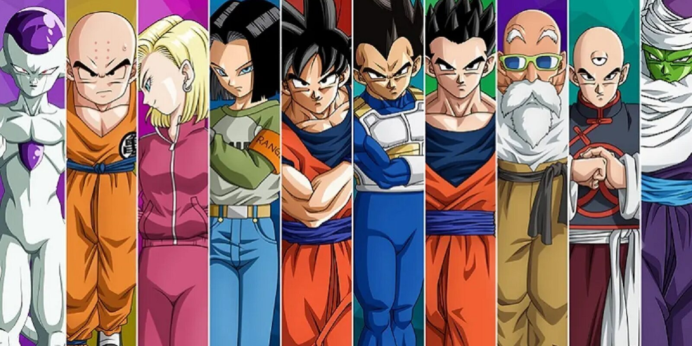

Historia
Toei Animation es una compañía de animación japonesa fundada bajo el nombre de Japan Animated Films en 1948, estamos seguros que conoces al menos una de sus historias, pues son los creadores de Dragon Ball, Sailor Moon y One Piece, animes mundialmente exitosos.

Historia de Toei Animation
Toei Animation, considerados los pioneros de la animación japonesa, comenzaron con el sueño de competir a Walt Disney Animation Studios, quienes desde esa época acaparaban las pantallas de todo el mundo, sin embargo fue un proceso complicado, cambiaron 3 veces de nombre antes de elegir el que los representa hasta ahora y tuvieron que unir fuerzas entre varias compañías de animación para lograrlo. Su primera producción fue en mayo de 1957, “Koneko No Rakugaki” o “Graffiti de un gatito” y fue un corto de 13 minutos de duración, cuyo protagonista es el mismo personaje que aparece en el logo de la compañía. Su primer largometraje fue “La serpiente blanca” en 1958, este tuvo tanto éxito que fue transmitido también en Estados Unidos en 1961.
Fueron avanzando a pasos pequeños hasta que en la década de los 60’s comenzaron a tener mejoras en la producción, desarrollando un largometraje al año y en 1963 comenzaron con las series para televisión en blanco y negro, para el 1967 ya las producían a color.
Toei AnimationLa Serpiente Blanca / Dominio Público
Toei Animation fue parte central en la fama que adquirió el anime, conoce aquí toda la historia de esta industria.
Toei Animation sufrió colapsos varias veces, pues obtuvo la mala fama de ser una empresa poco preocupada por sus trabajadores, hubo varias huelgas exigiendo mejores sueldos y condiciones de trabajo, entre ellos Hayao Miyazaki e Isao Takahata, quienes después crearon Studio Ghibli.
Toei Animation decidió alejar sus enfoques de las pantallas grandes y dedicarse a las series de televisión, comenzando a adaptar mangas a la pantalla, principalmente los del mangaka Go Nagai, como Mazinger Z. Este tipo de adaptaciones de los mangas a series televisivas los lanzó directo a la fama, pues en Japón esos mangas ya eran muy populares de por sí, fue tanto su éxito que sus creaciones comenzaron a llegar a otras partes del mundo. Candy Candy, fue la primera de ellas en atravesar todas las fronteras y llegar incluso a Latinoamérica, seguida por Transformers y Mazinger Z.